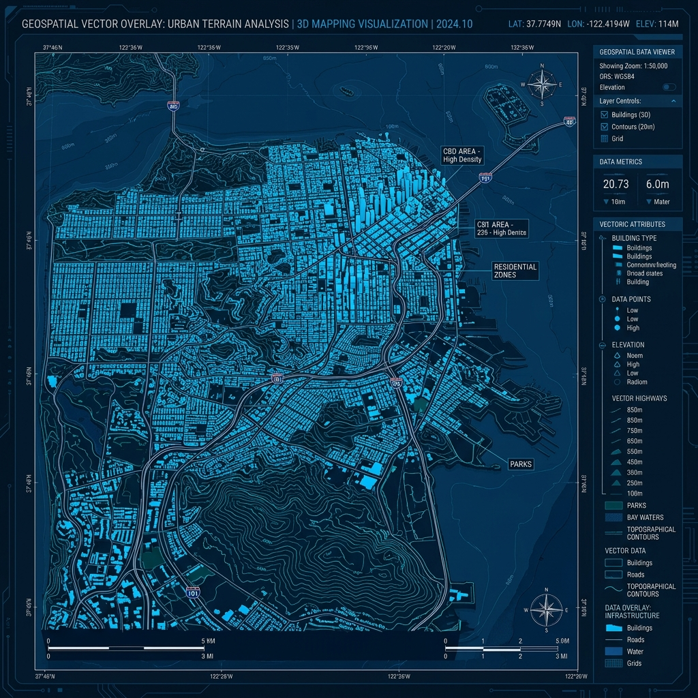
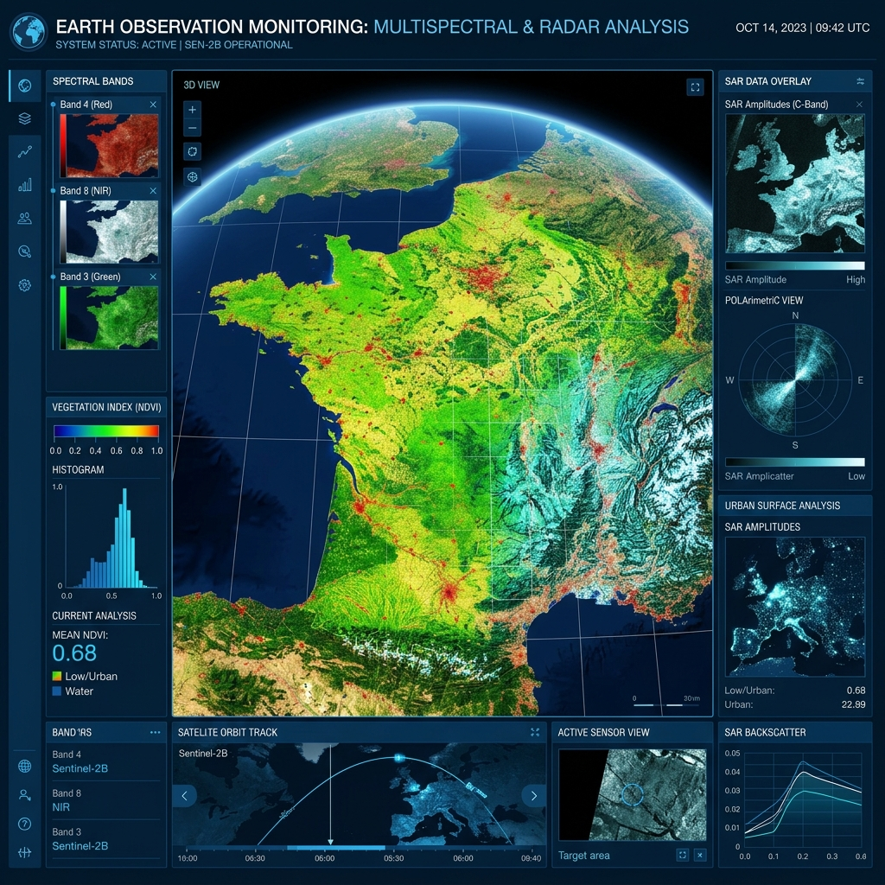
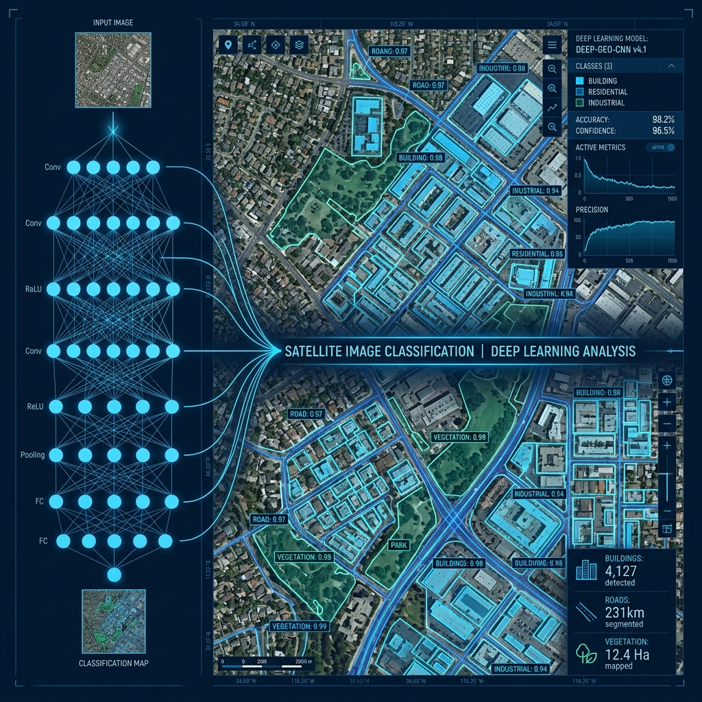

We provide advanced GIS, Remote Sensing, GeoAI, Climate Studies, Environmental Analytics, Water Resources Management, and Predictive Data Science solutions to empower organizations globally.
OrbitalIQ Analytics Pvt. Ltd. is a geospatial and data analytics company specializing in GIS, Remote Sensing, GeoAI, Environmental Analytics, Climate Studies, Water Resources Management, Agricultural Analytics, and Data Science solutions.
The company provides consultancy, research support, project implementation, and professional training programs tailored for students, researchers, government agencies, NGOs, and industries worldwide.
Learn More About UsEvery analysis is grounded in peer-reviewed scientific methodologies and rigorous data validation processes.
Leveraging high-performance cloud platforms, machine learning libraries, and spatial databases.
We combine advanced scientific methodologies with scalable technology platforms to deliver real-world geospatial value.

Advanced spatial mapping, vector overlay analysis, site suitability analysis, and enterprise database management systems.
Learn More
Multispectral, hyperspectral, and SAR satellite data processing for LULC, change detection, and environmental indexing.
Learn More
Implementing Deep Learning model architectures for object detection, landcover classification, and predictive analytics.
Learn MoreWe deliver research-driven accuracy, field expertise, and customized technological tools to address complex earth challenges.
Guided by specialized PhD researchers and senior GIS engineers with decades of industry experience.
Integrating scientifically back-tested algorithms and satellite data processing pipelines.
Utilizing high-end cloud compute clusters, Google Earth Engine, and custom WebGIS pipelines.
Bespoke dashboard mapping tools and analytics engines built to support client decision frameworks.
Job-oriented, project-based training programs using live satellite telemetry and code guides.
Providing guidance from raw telemetry data retrieval to publication-ready map exports.
Decadal analysis of urban expansions and forest canopy regressions using Sentinel-2 and Landsat spatial arrays, providing detailed insights for city planning bodies.
Case Study DetailsReal-time water resource monitoring using SAR radar sensors (Sentinel-1) to tracking surface area shrinks, siltation hazards, and reservoir capacity variances.
Case Study DetailsBridge the gap between academic theory and active commercial implementation. We offer structured training paths in Python, GIS, Cloud-based Remote Sensing, and Machine Learning.

Backed by expert researchers and corporate strategists leading the team of geospatial engineers.

Specialist in Remote Sensing, Environmental Studies, and Geographic Information Systems. Spearheads project execution.
Read Full Profile
Oversees academic collaborations, institutional partnerships, talent expansion, and student internship modules.
Read Full Profile